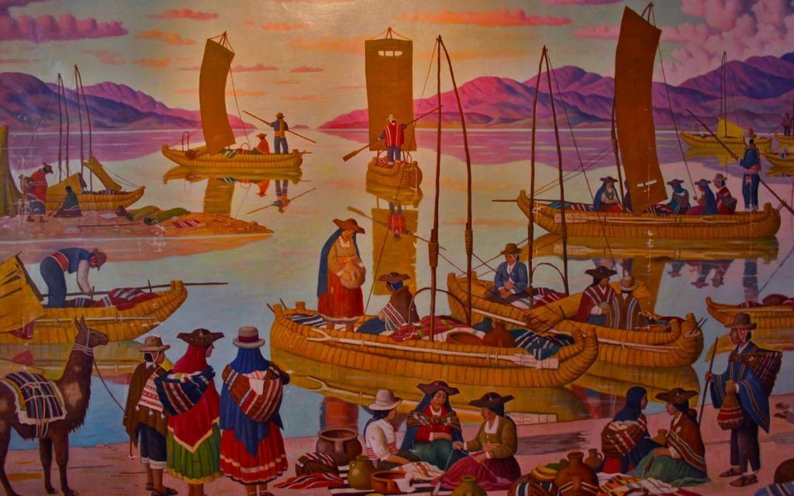

Peru's history spans from pre-Inca civilizations to the present day, spanning nearly 10 millennia. Peru was home to the Norte Chico civilization, the oldest civilization in the Americas and one of the six oldest in the world, as well as the Inca Empire, the largest and most advanced civilization in pre-Columbian America. In the 16th century, it was conquered by the Spanish Empire, which established a Viceroyalty with jurisdiction over most of its South American domains. The nation declared independence from Spain in 1821, but it was only consolidated after the Battle of Ayacucho, three years later.
